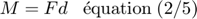

Problème 2/35, Meriam p. 44

Contents
Étape 1 – Démarche vectorielle
r = vecteur ayant O comme origine jusqu'au point d'application de F.
clear; close all; clc r = [0.1, 0, 0]; % m theta = -90 -20; % degrés mF = 60; % N (Norme de F) nF = [cosd(theta), sind(theta), 0]; F = nF*mF; Mo = cross(r,F); fprintf(' r = %+6.2fi %+6.2fj %+6.2fk m\n',r); fprintf(' F = %+6.2fi %+6.2fj %+6.2fk kN\n',F); fprintf('Mo = %+6.2fi %+6.2fj %+6.2fk N·m\n',Mo);
r = +0.10i +0.00j +0.00k m F = -20.52i -56.38j +0.00k kN Mo = +0.00i -0.00j -5.64k N·m
Étape 2 – Expression scalaire
fprintf('\nNorme de Mo = %.2f N·m',norm(Mo)); MomentPositif = Mo(3) > 0; % variable logique if(MomentPositif) fprintf(' dans le sens antihoraire\n'); else fprintf(' dans le sens horaire\n'); end
Norme de Mo = 5.64 N·m dans le sens horaire
Démarche scalaire (ajout)
Remplacer la force par ses composantes rectangulaires et appliquer le théorème de Varignon.

Fx ne contribue pas au moment.
clear all; close all; clc d = 0.1; % m (bras de levier) mF = 60; % N (Norme de F) Fy = mF*cosd(20);

Mo = Fy * d; fprintf('Norme de Mo = %.2f N·m',Mo); fprintf(' dans le sens horaire\n');
Norme de Mo = 5.64 N·m dans le sens horaire